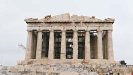

Building of the Parthenon beginsIn 480/479 BC when the Persians attacked Athens, the city's temples had been almost totally destroyed. Decades later, Perikles began a huge rebuilding programme to make Athens the most beautiful and impressive city in the Greek world. The most magnificent building in his plan was the Parthenon. This was a temple dedicated to Athena. It stood on the Acropolis, a hill in the centre of Athens. It was decorated with sculptures and housed a gold and ivory statue of Athena by the sculptor Phidias. 
XXX.
|